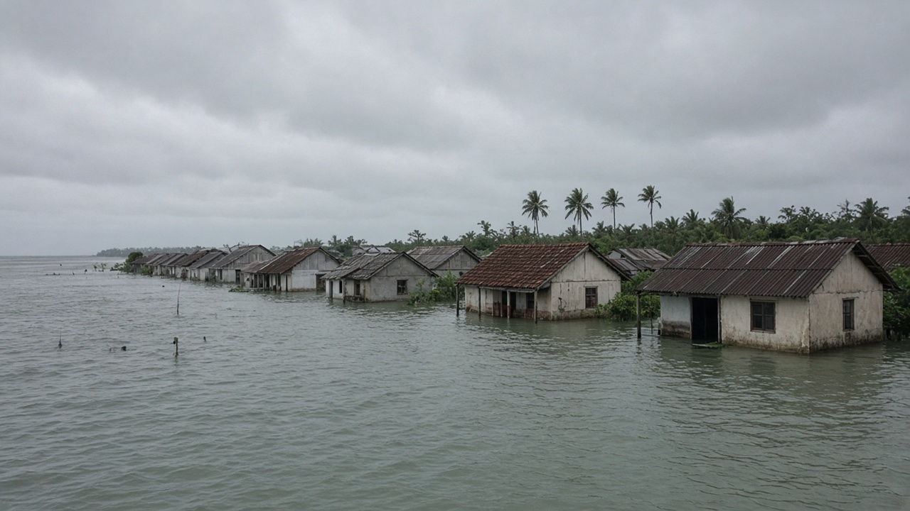
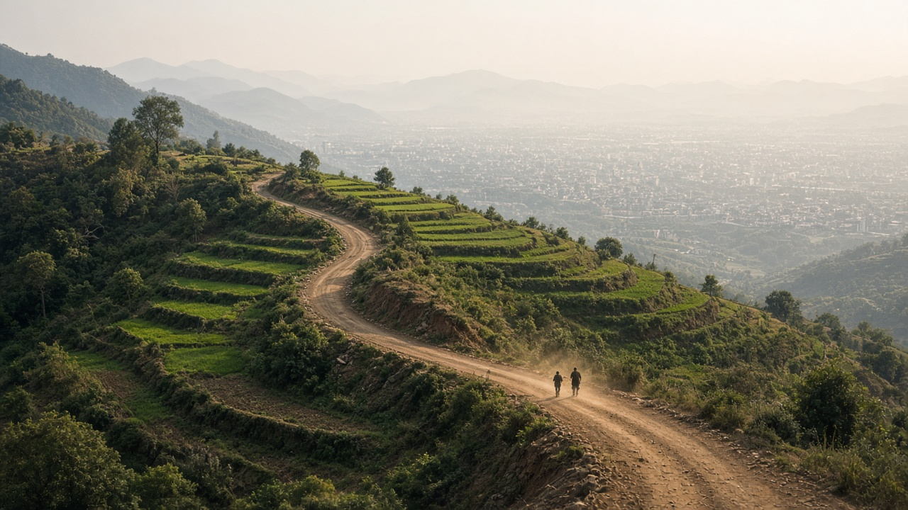
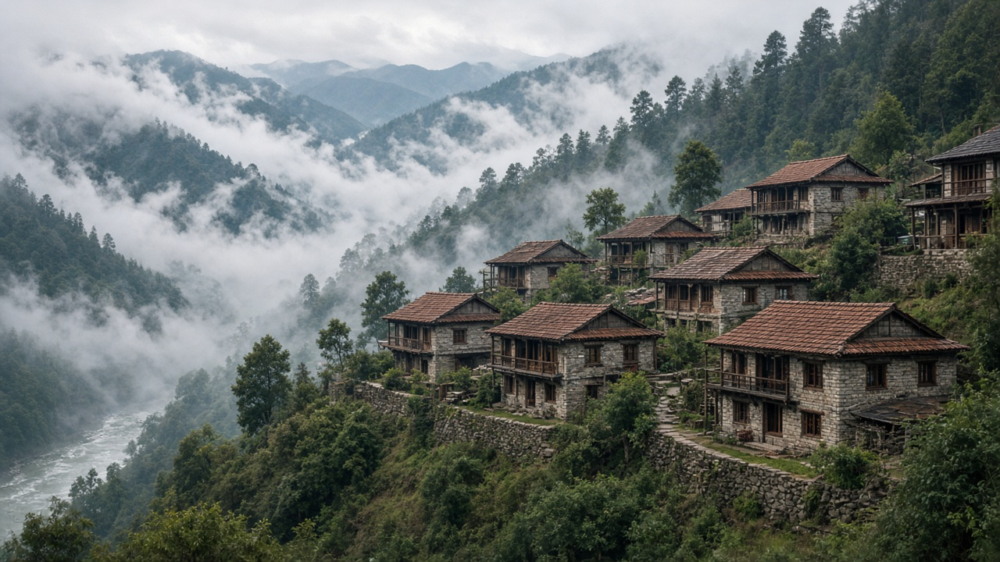

Climate Refugees & Environmental Migration
Published on July 16, 2026

Climate refugees and environmental migrants are people who move, voluntarily or under duress, because environmental conditions undermine their safety, livelihoods, or habitability. While the term climate refugee is widely used in public discourse, it is not yet a formal legal category under international refugee law, which traditionally covers persecution rather than environmental displacement. Nevertheless, the reality of climate-linked migration is growing as sea level rise, drought, desertification, extreme storms, and glacial melt displace communities from coastlines, farmlands, and mountain villages around the world.
Migration patterns are complex and rarely driven by climate alone. Economic opportunity, conflict, governance, and social networks interact with environmental stressors. In South Asia, farmers facing unreliable monsoons may move seasonally to cities; families after floods may resettle permanently; and entire villages in hazard-prone areas may relocate with government support. Internal displacement often exceeds cross-border movement, placing pressure on urban infrastructure, labor markets, and social services in receiving areas. Women, children, indigenous communities, and the poor frequently bear disproportionate burdens when relocation is poorly planned or underfunded.
Policy responses include integrating climate risk into development planning, strengthening disaster preparedness, creating legal pathways for affected populations, and addressing loss and damage through international finance. Planned relocation—with community consent, fair compensation, and cultural sensitivity—is preferable to chaotic displacement after disasters. Documenting migration trends helps governments anticipate urban growth and invest in housing, water, and employment ahead of crises. Reducing emissions limits how many people will face unlivable conditions in the future, while adaptation investments help others remain safely in place. Recognizing environmental migration as a human and governance challenge—not merely an environmental statistic—is essential for equitable climate action in the decades ahead.

जलवायु शरणार्थी र वातावरणीय आप्रवासी भनेका त्यस्ता व्यक्तिहरू हुन् जो वातावरणीय अवस्थाले सुरक्षा, जीविकोपार्जन वा बस्ने योग्यतालाई असर गरेकाले स्वेच्छाले वा बाध्यतामा सर्छन्। सार्वजनिक बहसमा 'जलवायु शरणार्थी' शब्द व्यापक प्रयोग भए पनि, अन्तर्राष्ट्रिय शरणार्थी कानुनमा यो अहिलेसम्म औपचारिक कानुनी श्रेणी होइन, जसले परम्परागत रूपमा सताउनुभन्दा वातावरणीय विस्थापनलाई समेट्दैन। तैपनि, समुद्र सतह वृद्धि, खडेरी, मरुभूमीकरण, अत्यधिक आँधी र हिउँ पग्लने कारणले विश्वभर तटीय, कृषि र पहाडी गाउँहरूबाट समुदाय विस्थापित हुँदै जलवायुसँग जोडिएको बसाइँसराइको वास्तविकता बढ्दो छ।
बसाइँसराइका ढाँचा जटिल हुन्छन् र प्रायः केवल जलवायु मात्रले निर्धारित हुँदैनन्। आर्थिक अवसर, संघर्ष, शासन र सामाजिक सञ्जालले वातावरणीय दबाबसँग अन्तर्क्रिया गर्छन्। दक्षिण एसियामा अनिश्चित मनसुन सामना गर्ने किसानहरू मौसमी रूपमा सहर जान सक्छन्; बाढीपछि परिवारहरू स्थायी रूपमा बसाइँसर्न सक्छन्; र जोखिमयुक्त क्षेत्रका सम्पूर्ण गाउँहरू सरकारी सहयोगमा सर्न सक्छन्। सीमा पारको चाल भन्दा आन्तरिक विस्थापन प्रायः बढी हुन्छ, जसले गन्तव्य क्षेत्रका शहरी पूर्वाधार, श्रम बजार र सामाजिक सेवामा दबाब सिर्जना गर्छ। पुनर्वास खराब योजना वा अपर्याप्त बजेट भएमा महिला, बालबालिका, आदिवासी समुदाय र गरिबहरू प्रायः असमान बोझ बोक्छन्।
नीति प्रतिक्रियामा विकास योजनामा जलवायु जोखिम समावेश गर्ने, विपद् तयारी बलियो बनाउने, प्रभावित जनसंख्याका लागि कानुनी मार्ग सिर्जना गर्ने र अन्तर्राष्ट्रिय वित्त मार्फत हानि र क्षतिको सम्बोधन गर्ने समावेश छ। योजनाबद्ध पुनर्वास—समुदायको सहमति, न्यायसंगत क्षतिपूर्ति र सांस्कृतिक संवेदनशीलतासहित—प्रकोपपछिको अव्यवस्थित विस्थापनभन्दा राम्रो हुन्छ। बसाइँसराइ प्रवृत्ति दर्ता गर्नाले सरकारहरूले शहरी वृद्धि पूर्वानुमान गर्न र संकट अघि नै आवास, पानी र रोजगारीमा लगानी गर्न मद्दत पाउँछन्। उत्सर्जन घटाउँदा भविष्यमा कति मानिसहरू अनिवास्य अवस्थामा पर्छन् भन्ने सीमित हुन्छ, भने अनुकूलन लगानीले अरूलाई सुरक्षित रूपमा आफ्नै ठाउँमा रहन मद्दत गर्छ। वातावरणीय बसाइँसराइलाई केवल वातावरणीय तथ्याङ्क होइन, मानवीय र शासन चुनौतीका रूपमा चिन्नु आगामी दशकहरूमा न्यायसंगत जलवायु कार्यका लागि अनिवार्य छ।

जलवायु शरणार्थी और पर्यावरणीय प्रवासी वे लोग हैं जो पर्यावरणीय परिस्थितियों के कारण अपनी सुरक्षा, आजीविका या रहने की योग्यता प्रभावित होने पर स्वेच्छा से या मजबूरी में स्थानांतरित होते हैं। सार्वजनिक चर्चा में 'जलवायु शरणार्थी' शब्द व्यापक रूप से प्रयोग होता है, लेकिन अंतर्राष्ट्रीय शरणार्थी कानून में यह अभी औपचारिक कानूनी श्रेणी नहीं है, जो परंपरागत रूप से उत्पीड़न को कवर करता है, न कि पर्यावरणीय विस्थापन को। फिर भी, समुद्र तल का बढ़ना, सूखा, मरुस्थलीकरण, अत्यधिक तूफान और ग्लेशियर पिघलने से दुनिया भर के तटीय, कृषि और पहाड़ी गांवों से समुदाय विस्थापित हो रहे हैं, और जलवायु से जुड़े प्रवासन की वास्तविकता बढ़ रही है।
प्रवासन के पैटर्न जटिल होते हैं और शायद ही केवल जलवायु द्वारा संचालित होते हैं। आर्थिक अवसर, संघर्ष, शासन और सामाजिक नेटवर्क पर्यावरणीय दबावों के साथ परस्पर क्रिया करते हैं। दक्षिण एशिया में, अविश्वसनीय मानसून का सामना करने वाले किसान मौसमी रूप से शहरों में जा सकते हैं; बाढ़ के बाद परिवार स्थायी रूप से बस सकते हैं; और जोखिमग्रस्त क्षेत्रों के पूरे गांव सरकारी सहयोग से स्थानांतरित हो सकते हैं। सीमा पार आवागमन से अक्सर अधिक आंतरिक विस्थापन होता है, जो प्राप्ति क्षेत्रों के शहरी बुनियादी ढांचे, श्रम बाजार और सामाजिक सेवाओं पर दबाव डालता है। महिलाएं, बच्चे, आदिवासी समुदाय और गरीब अक्सर असमान बोझ झेलते हैं जब पुनर्वास खराब योजना या अपर्याप्त धन के साथ किया जाता है।
नीति प्रतिक्रियाओं में विकास योजना में जलवायु जोखिम को शामिल करना, आपदा तैयारी को मजबूत करना, प्रभावित आबादी के लिए कानूनी मार्ग बनाना और अंतर्राष्ट्रीय वित्त के माध्यम से हानि और क्षति का समाधान करना शामिल है। योजनाबद्ध पुनर्वास—समुदाय की सहमति, न्यायसंगत मुआवजा और सांस्कृतिक संवेदनशीलता के साथ—आपदा के बाद अव्यवस्थित विस्थापन से बेहतर है। प्रवासन प्रवृत्तियों का दस्तावेजीकरण सरकारों को शहरी वृद्धि का पूर्वानुमान लगाने और संकट से पहले आवास, पानी और रोजगार में निवेश करने में मदद करता है। उत्सर्जन कम करने से भविष्य में कितने लोग अप्रतिवासनीय परिस्थितियों का सामना करेंगे, यह सीमित होता है, जबकि अनुकूलन निवेश दूसरों को सुरक्षित रूप से अपनी जगह पर रहने में मदद करते हैं। पर्यावरणीय प्रवासन को केवल पर्यावरणीय आंकड़ा नहीं, बल्कि मानवीय और शासन चुनौती के रूप में पहचानना आने वाले दशकों में न्यायसंगत जलवायु कार्रवाई के लिए आवश्यक है।